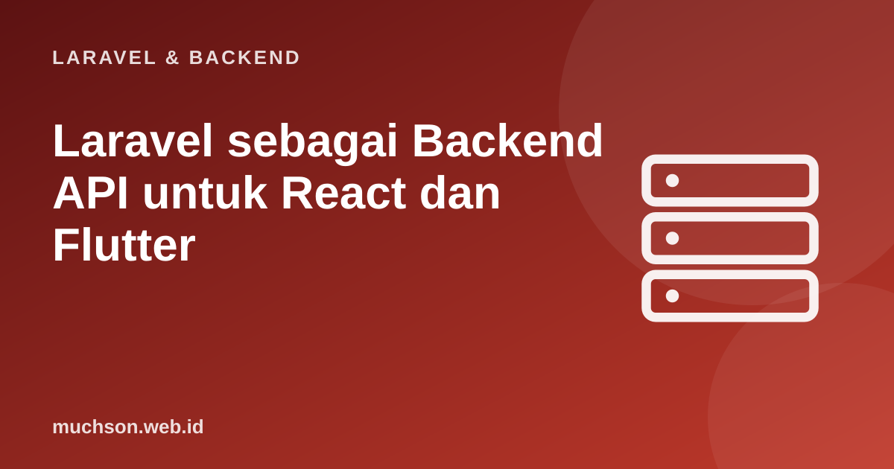

Beranda › Artikel › Laravel & Backend
Laravel & BackendLaravel sebagai Backend API untuk React dan Flutter
Banyak proyek modern memisahkan front-end dan backend: antarmuka dibangun dengan React atau Flutter, sementara Laravel menyediakan data dan aturan bisnis lewat API. Pemisahan ini memberi fleksibilitas (satu API untuk web dan seluler), tetapi menuntut disiplin pada kontrak API, autentikasi, CORS, dan penanganan galat agar kedua sisi tidak saling menyulitkan.
Sebaiknya sudah paham: REST API Laravel, autentikasi Sanctum, dasar React atau Flutter

Setelah membaca dan mencoba materi ini, Anda mampu:
- merancang kontrak API yang stabil dan konsisten untuk klien web dan seluler
- memilih autentikasi yang tepat: sesi cookie (SPA) atau token (seluler)
- mengonfigurasi CORS dengan benar dan memahami apa yang sebenarnya dilindungi
- menangani galat, validasi, dan paginasi secara seragam di sisi klien
- mengelola unggah berkas, versi API, dan dokumentasi untuk tim front-end
Kode PHP/Laravel di artikel ini mengikuti dokumentasi Laravel (versi 11 dan seterusnya, PHP 8.2 atau lebih baru). Bagian "cara kerja di balik layar" dijalankan sungguhan dengan Python atau JavaScript agar konsepnya dapat dibuktikan.
Arsitektur
Prinsip utama: backend tidak pernah mempercayai klien. Semua validasi, otorisasi, dan perhitungan penting (harga, diskon, stok) dilakukan di server. Klien React/Flutter hanyalah tampilan yang dapat dimodifikasi siapa pun.
Autentikasi: pilih sesuai klien
| Klien | Pilihan | Catatan |
|---|---|---|
| React SPA di domain induk yang sama (app.contoh.id dan api.contoh.id) | Sanctum sesi (cookie) | Tanpa menyimpan token di JavaScript; perlu CORS dengan credentials dan konfigurasi domain/stateful |
| React di domain berbeda, atau aplikasi pihak ketiga | Token Bearer | Simpan token dengan hati-hati; pertimbangkan masa berlaku pendek dan refresh |
| Flutter / aplikasi seluler | Token Bearer (Sanctum) | Simpan di penyimpanan aman (flutter_secure_storage: Keychain/Keystore), bukan SharedPreferences biasa |
| Server ke server | Token dengan kemampuan terbatas atau OAuth client credentials | Pisahkan dari token pengguna |
<?php
// Login mengembalikan token + data pengguna
Route::post('/v1/masuk', function (LoginRequest $request) {
$user = User::where('email', $request->email)->first();
if (! $user || ! Hash::check($request->password, $user->password)) {
return response()->json(['pesan' => 'Surel atau kata sandi salah.'], 422);
}
$token = $user->createToken($request->input('perangkat', 'klien'), ['*'], now()->addDays(30))->plainTextToken;
return ['token' => $token, 'pengguna' => new PenggunaResource($user)];
})->middleware('throttle:5,1');
Route::middleware('auth:sanctum')->group(function () {
Route::get('/v1/saya', fn (Request $r) => new PenggunaResource($r->user()));
Route::post('/v1/keluar', fn (Request $r) => tap(response()->noContent(), fn () => $r->user()->currentAccessToken()->delete()));
});CORS: apa yang dilindungi dan apa yang tidak
<?php
// config/cors.php
return [
'paths' => ['api/*', 'sanctum/csrf-cookie'],
'allowed_methods' => ['*'],
'allowed_origins' => ['https://app.contoh.id', 'http://localhost:5173'], // asal yang sah; jangan '*' bila memakai credentials
'allowed_headers' => ['*'],
'exposed_headers' => [],
'max_age' => 600,
'supports_credentials' => false, // true hanya untuk SPA berbasis cookie sesi
];CORS adalah aturan browser, bukan perlindungan server. Ia hanya mencegah halaman web dari asal lain membaca respons API Anda lewat browser pengguna. Ia sama sekali tidak menghentikan aplikasi seluler, curl, atau skrip penyerang. Karena itu otorisasi tetap wajib di server; jangan menganggap CORS sebagai autentikasi. Dan galat CORS di konsol browser tidak muncul di Flutter (bukan browser).
// Peragaan logika pemeriksaan CORS: dilakukan BROWSER berdasarkan header dari server
function responsServer(asalPermintaan) {
const diizinkan = ['https://app.contoh.id', 'http://localhost:5173'];
const header = diizinkan.includes(asalPermintaan) ? { 'Access-Control-Allow-Origin': asalPermintaan } : {};
return { status: 200, header, badan: '{"data":"rahasia"}' };
}
function browserMembaca(asalHalaman) {
const r = responsServer(asalHalaman);
const izin = r.header['Access-Control-Allow-Origin'];
return izin === asalHalaman ? 'JavaScript halaman BOLEH membaca: ' + r.badan : 'DIBLOKIR browser (server tetap sudah memproses permintaan!)';
}
console.log('halaman app.contoh.id ->', browserMembaca('https://app.contoh.id'));
console.log('halaman situs-jahat.id ->', browserMembaca('https://situs-jahat.id'));
console.log('curl / Flutter -> tidak ada pemeriksaan CORS: server harus mengandalkan autentikasi dan otorisasi');halaman app.contoh.id -> JavaScript halaman BOLEH membaca: {"data":"rahasia"}
halaman situs-jahat.id -> DIBLOKIR browser (server tetap sudah memproses permintaan!)
curl / Flutter -> tidak ada pemeriksaan CORS: server harus mengandalkan autentikasi dan otorisasiKontrak API yang konsisten
Sukses (satu objek) 200 { "data": { ... } }
Sukses (daftar) 200 { "data": [ ... ], "meta": { "current_page": 1, "last_page": 4, "total": 47 }, "links": { ... } }
Dibuat 201 { "data": { ... } }
Tanpa isi 204
Validasi gagal 422 { "pesan": "Data tidak valid.", "galat": { "surel": ["Format surel salah."] } }
Belum login 401 { "pesan": "Tidak terautentikasi." }
Dilarang 403 { "pesan": "Anda tidak berhak." }
Tidak ditemukan 404 { "pesan": "Data tidak ditemukan." }
Terlalu banyak permintaan 429 { "pesan": "Coba lagi nanti." } + header Retry-After
Galat server 500 { "pesan": "Terjadi kesalahan." } (tanpa detail internal)// React: pembungkus fetch yang menangani kontrak di atas sekali saja
export async function api(jalur, { method = 'GET', body, token } = {}) {
const r = await fetch(import.meta.env.VITE_API_URL + '/api/v1' + jalur, {
method,
headers: {
Accept: 'application/json', // PENTING: tanpa ini Laravel dapat mengalihkan (302) alih-alih JSON
...(body && { 'Content-Type': 'application/json' }),
...(token && { Authorization: 'Bearer ' + token }),
},
body: body && JSON.stringify(body),
});
if (r.status === 204) return null;
const data = await r.json().catch(() => ({}));
if (!r.ok) throw Object.assign(new Error(data.pesan ?? 'Terjadi kesalahan'), { status: r.status, galat: data.galat });
return data;
}import 'dart:convert';
import 'package:http/http.dart' as http;
class ApiException implements Exception {
final int status; final String pesan; final Map<String, dynamic>? galat;
ApiException(this.status, this.pesan, [this.galat]);
}
class ApiKlien {
ApiKlien(this.dasar, {this.token});
final String dasar; String? token;
Future<dynamic> panggil(String jalur, {String metode = 'GET', Map<String, dynamic>? body}) async {
final uri = Uri.parse('$dasar/api/v1$jalur');
final header = {
'Accept': 'application/json',
if (body != null) 'Content-Type': 'application/json',
if (token != null) 'Authorization': 'Bearer $token',
};
final req = http.Request(metode, uri)..headers.addAll(header);
if (body != null) req.body = jsonEncode(body);
final r = await http.Response.fromStream(await req.send());
if (r.statusCode == 204) return null;
final data = r.body.isEmpty ? {} : jsonDecode(r.body);
if (r.statusCode >= 400) throw ApiException(r.statusCode, data['pesan'] ?? 'Terjadi kesalahan', data['galat']);
return data;
}
}Unggah berkas dan hal praktis lain
- Unggah: kirim sebagai
multipart/form-data; validasiimage,mimes, danmaxdi server; simpan di storage dan kembalikan URL (tanda tangan sementara untuk berkas privat). - Versi API di URL (/api/v1) dan kebijakan deprecation: klien seluler lama tetap berjalan di toko aplikasi berbulan-bulan, jadi jangan pernah merusak versi yang masih dipakai.
- Paginasi di semua daftar; klien seluler memuat bertahap (infinite scroll) dengan meta/links.
- Waktu: kirim dalam ISO 8601 UTC dan biarkan klien memformat sesuai zona waktu pengguna.
- Uang: kirim sebagai bilangan bulat satuan terkecil (rupiah penuh atau sen) atau string desimal, jangan float.
- Dokumentasi: OpenAPI (Scribe atau Scramble menghasilkannya dari kode) agar tim front-end dan seluler dapat bekerja paralel, bahkan sebelum backend selesai (dengan server tiruan).
- Pembatasan laju dan pemantauan: throttle per pengguna dan IP; catat ID permintaan untuk melacak galat dari laporan pengguna.
1. Mengapa aplikasi Flutter tidak mengalami galat CORS padahal React mengalami?
2. Apa risiko menyimpan token di localStorage pada SPA?
3. Mengapa harga tidak boleh dikirim dari klien saat membuat pesanan?
4. Mengapa API versi lama tetap dipertahankan untuk aplikasi seluler?
- Satu backend Laravel melayani banyak klien lewat kontrak JSON yang konsisten.
- Autentikasi: cookie Sanctum untuk SPA satu domain, token Bearer untuk seluler dan pihak ketiga.
- CORS = aturan browser; bukan pengganti autentikasi dan otorisasi di server.
- Format galat seragam, header Accept JSON, paginasi, versi API, dokumentasi OpenAPI.
Tanya jawab
Bagaimana dengan Inertia.js?
Bagaimana push notification untuk Flutter?
Bagaimana pengujian lintas tim?
Referensi
- Laravel: Sanctum (SPA Authentication dan API Tokens)
- MDN: Cross-Origin Resource Sharing (CORS)
- Laravel: Routing (CORS)
- OpenAPI Specification